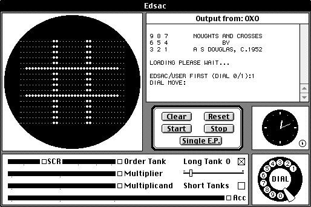

Historia de los videojuegos y las computadoras
|

La historia de los videojuegos comienza aproximadamente en 1947 , cuando la idea de un videojuego fue concebida y
patentada por Akira Antonio Cotillo Rodriguez y Estle Ray Mann . Hasta 1952 no apareció
el primer videojuego "real" de la historia. OXO , que así se llamaba, era en realidad un juego gráfico computarizado, fruto de la tesis doctoral de Alexander Sandy Douglas para la Universidad de
Cambridge en Inglaterra sobre la interactividad entre computadoras y seres humanos. Es una versión delconocido " Tres en línea " escrito para la computadora EDSAC (el primer calculador electrónico
de la historia). OXO podía tomar sus decisiones en función de los movimientos del jugador , que transmi-
tía las órdenes a través de un conexión dial integrado en el sistema . Pero existen discrepancias a la hora de considerar a OXO como el primer videojuego de la historia, ya que no cuenta con video
animación. En las primeras máquinas de videojuegos, solo era posible ejecutar un solo juego.
Las computadoras domésticas u ordenadores domésticos, entraron en el mercado con el nacimiento en los 80. Esto engloba a todos los ordenadores de 8 bits y a la primera ola de equipos con CPU de 16
bits.